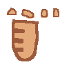
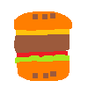

TASTE THE 3-COURSE MEAL
Have you ever wondered why UX has so many things in common with culinary world? Let's explore with me!
When I started to learn UX, I was interested in how food is used for some UX features name such as Bento grid,snackbars, toasts, etc. Turning back to the first gestural glossary activity in class, I realise that there are people think outside the box of food to shortern the gap between technology and user interaction by food.

COURSE_01: STARTER
Let's start your meal with a Course_01: BREADCRUMBS.
Breadcrumbs can look like this Home > About > Products > Contact. It help locate the user when they are in a confusion slide.

COURSE_02: MAIN
HAMBURGER BUTTON can be seen as the main button including all of other navigation links.
COURSE_03: DESSERT
Moving on the dessert, we have Cookies. This term is usually overlooked by users. By accepting cookies, you accept the system to remember you language, login, archive, perferences.